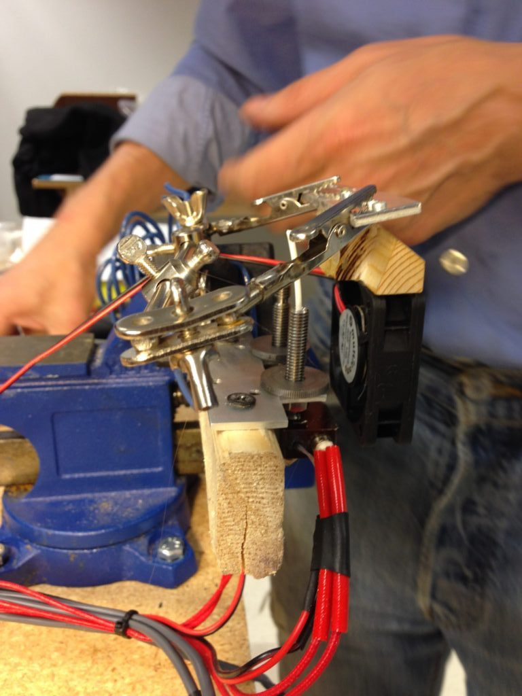
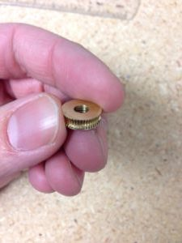

Printhead Feb 25, 2018
One of the most important design objectives of the Isis One was soluble support, a feature that would facilitate truly geometry agnostic printing, and that had so far (and has since) eluded the commercial market. Implemented originally by Stratasys, the soluble support technique involved using a second extruder to deposit software-generated support structures of a dissolvable plastic, upon which layers of the part could be printed. Soluble support would open the door to the ability to print meaningfully useful engineering parts.
In addition to solving the nozzle level problem, we had a few other objectives in our new printhead design. We had to reduce the mass of the printhead by a factor of two since there would be two of them on the carriage. We also needed a design that would allow the two nozzles to be within 15 mm or so of each other to maximize travel along the axis and thus print volume. Further, we were unhappy with the extrusion characteristics of our old printhead. Overall throughput was too low, which limited speed. The melt chamber was too large, causing undue amounts of dribbling on retract and necessitating larger retract moves than we wanted. Finally, the feed wheel arrangement needed to be more robust. The old arrangement used an idler that was manually tightened against the feed wheel. The motor would jam if the idler was overtightened, and the wheel would slip if wasn’t tightened enough. Both led to failed prints.
The new design centered around a compact, lightweight arrangement that delivered a great deal of torque, administered to the filament through the action of two driven feedwheels at once. The feedwheels were driven by a custom gearbox mechanism supported between two metal plates on the face of a NEMA 17 stepper. This massive driving force on the filament solved our jamming problem and allowed the use of a very small melt chamber. A steep heat gradient was facilitated by a very thin barrel, machined from stainless steel (rather than aluminum) so as to achieve the necessary mechanical strength while being very thin. We solved the problem of nozzles interfering with each other by making it easy to perfectly level the two nozzles with a captive nut adjustment mechanism.
The design came together more painlessly than we expected. The only major difficult had to do with heat gradients—heat would travel up the barrel too aggressively, causing the not-yet-melted filament in the upper portion of the barrel to swell, jamming the extruder. Some airflow, diverted from the print cooling fan to the bottom of the barrel, in conjunction with a teflon barrel liner, solved the problem.
The actual manufacturing process, on the other hand, was far from smooth. Much of the design of the Isis One had been accomplished with plastic parts designed to be printed on our in-house farm of Isis Ones, and metal parts were either simple aluminum plates, or else extrusions cut to length. For the new printhead, however, there was no getting around significant custom machining.
One of the major lessons of this project is that, whatever horror stories you may have heard, they’re rather good at manufacturing in China. After very expensive and time consuming dalliances first in Chicago and then in Utah (the first shop strung us along for a while, and then declared that they couldn’t make our parts, the second made them, eventually, for $200/set), we eventually landed with a shop in Shenzhen. They were extremely professional, responsive, fast, and they came through with excellent parts for less than a quarter the cost of the American shop. It had never occured to us that working with the Chinese shop would be a smoother process than with the American shop, nor that the result would be better. Live and learn.

Assembling our printheads proved to be a monstrous ordeal. The spacers that held the plates apart proved to be ridiculously fiddly—differences of 100um in their length was the difference between the extruder printing and its gears jamming hopelessly. We ended up remaking the spacers manually, using an improvised dremel-chop-saw device with a fiberglass wheel, and filing the resulting centimeter-long bits of brass tubing to their extremely specific critical dimension.
The wiring harness also proved to be a time consuming mess, that we ended up solving manually at the cost of a lot of hours. Once again here, the long term answer proved to be China—Alibaba came through with an excellent shop that produced wiring harnesses for a lot less money than we thought possible.
Despite the difficulty of getting it into production, our new printhead fundamentally achieved all its design objectives. We got a dual extruder working, increased our print speed to 150 mm/s, almost completely eliminated stringing problems, and made a very significant improvement in overall reliability. Using polyvinyl alcohol support material, we got soluble support to work, though we never got adhesion between support material and the print quite as good as we wanted.
The printhead was fundamentally what made the Isis One design what it was—it got us the speed, reliability, and soluble support that set the printer apart. Interestingly, I haven’t seen another dual driven feedwheel design on the market since.